In this hands-on-lab you will learn basics of how to implement microservice with Azure Function and Cosmos DB.
Pre-requisites to being with this lab
Please install these three extensions in Visual Studio Code before starting the session.
You can run following command to install the extension in Visual Studio Code
code --install-extension ms-azuretools.vscode-azureappservice
code --install-extension ms-azuretools.vscode-cosmosdb
code --install-extension ms-azuretools.vscode-azurefunctions
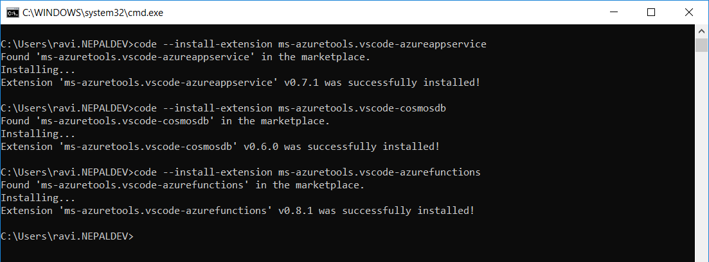
After installing the extensions, please restart your Visual Studio Code and check extensions tab to see if it is showed as below or not.
Make sure you have an active subscription that you activated from the Azure Pass organizer has provided you.
Step 1: Press Ctrl + Shift + P to open command palette
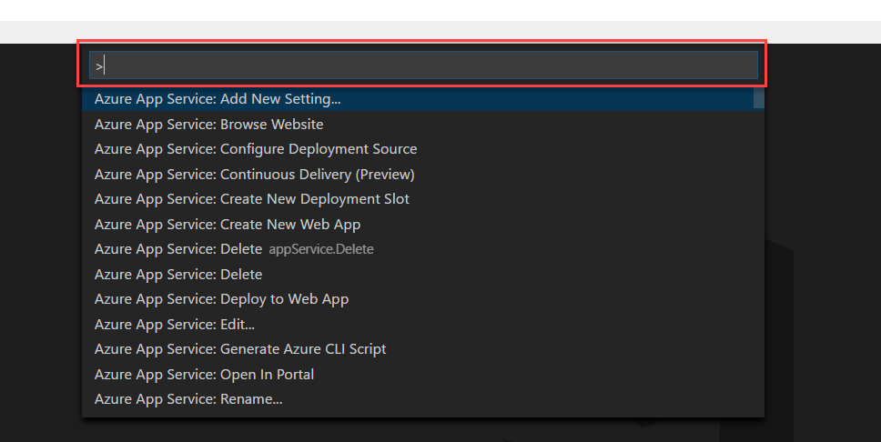
Step 2: Type Azure: Sign In and click on Azure: Sign In

Step 3: You will see a pop-up on right bottom section, click on Copy and Open

Step 4: In the browser, paste the code that is in your clipboard and click on Continue
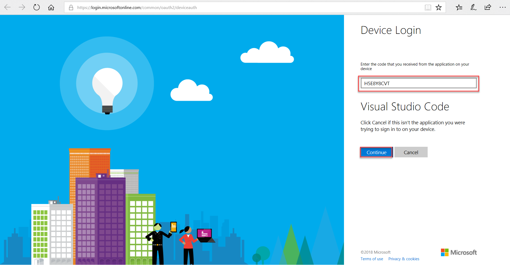
Step 5: You will be prompted to login with your Microsoft account that has Azure Subscription. Sign in with your account, then you will see following screen. You can close this screen and move forward.
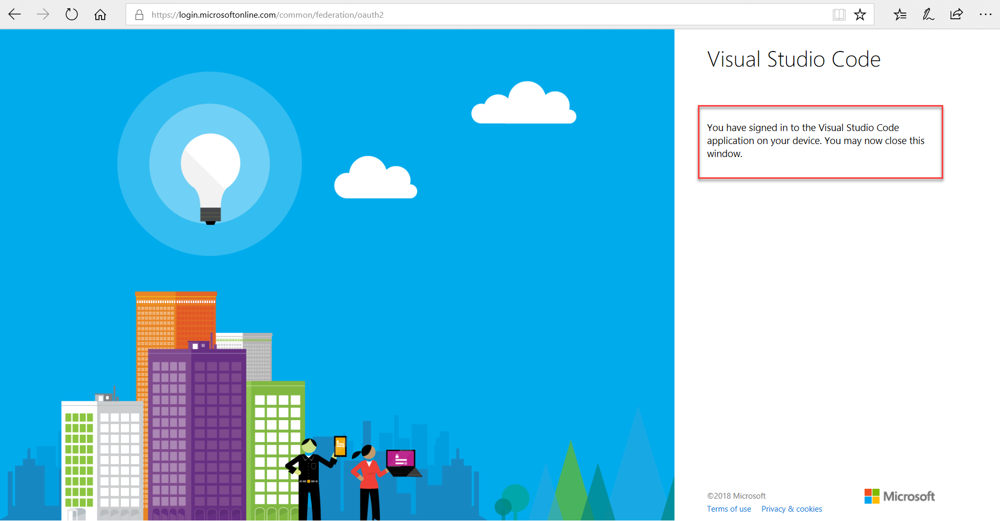
Step 6: To verify your login, press Ctrl + Shift + P, type and click Azure:Select Subscriptions
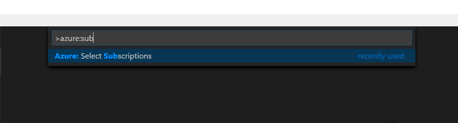
Step 7: After clicking Azure: Select Subscriptions, if you can see list of your subscriptions then, your login has worked.

Step 1: Login to Azure Portal https://portal.azure.com
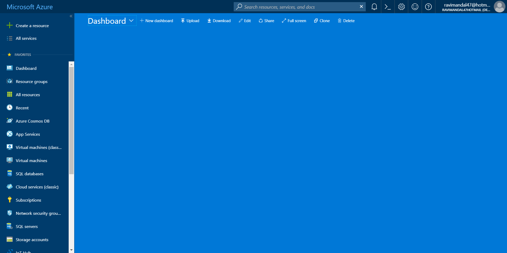
Step 2: Click on Create a resource on left top position of left side bar
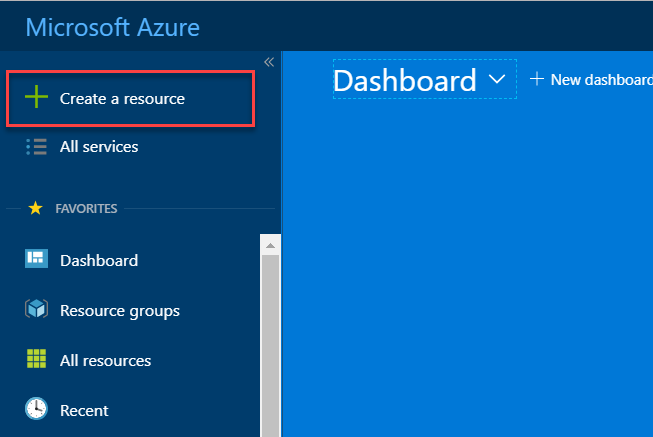
Step 3: Click on Compute and then Function App

Step 4: Enter the following details in the new blade and click Create

When you receive deployment completed message, open the URL in browser to see if your Azure Function App is running or not.

Step 1: Click on Create a resource on left top position of left side bar
Step 2: Click on Compute and then Function App
Step 3: Enter the following details in the new blade and click Create

When you receive deployment completed message, open the URL in browser to see if your Azure Function App is running or not.
Step 1: Click on Create a resource on left top position of left side bar
Step 2: Click on Compute and then Function App

Step 3: Enter the following details in the new blade and click Create
When you receive deployment completed message, open the URL in browser to see if your Azure Function App is running or not.
Step 1: Click on Create a resource on left top position of left side bar

Step 2: Click on **Web + Mobile ** and then Web App

Step 3: Enter the following details in the new blade

Step 4: Select App Service Plan/Location and follow following steps

Step 5: Click Create
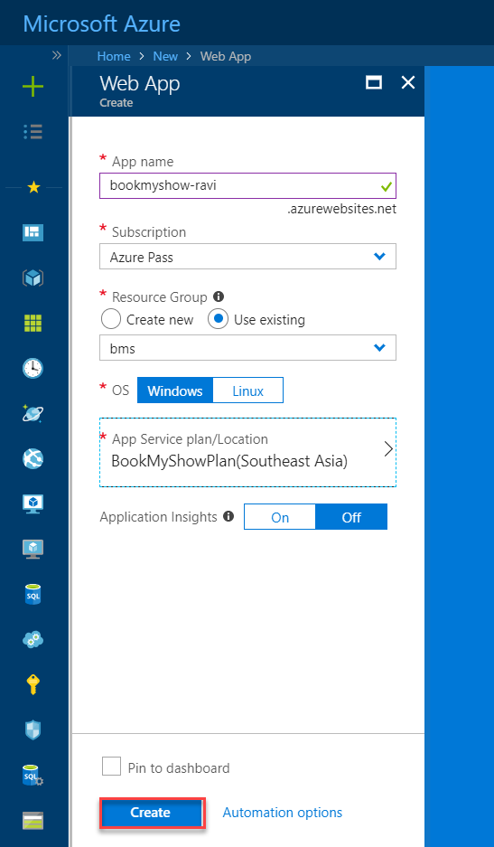
Open the URL after deployment has been completed, you will see the following screen

Step 1: Click on Create a resource on left top position of left side bar
Step 2: Click on Databases and then Azure Cosmos DB
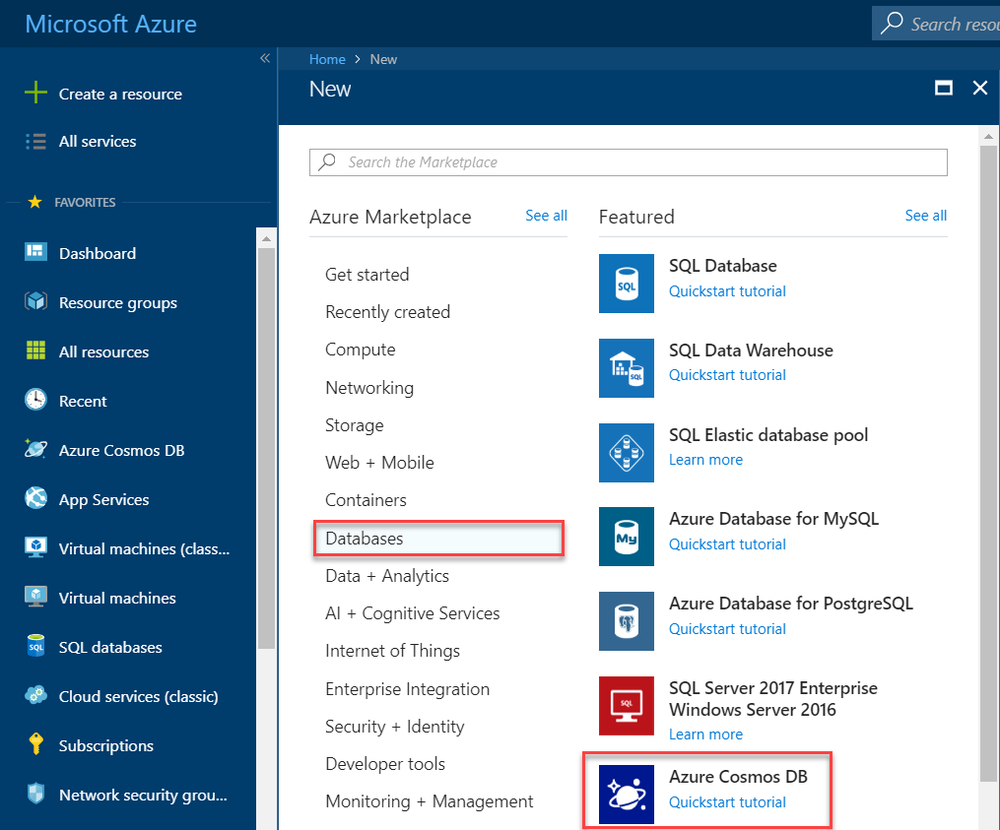
Step 3: Enter the following details in the new blade and click Create

Step 1: After Cosmos DB account has been created, open your Cosmos DB account by clicking on **All Services **, searching for Cosmos DB and selecting the account you created in early step
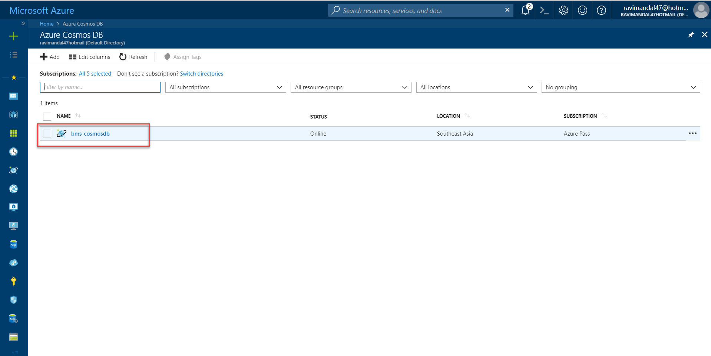
Step 2: Click on Overview then Add Collection

Step 3: You will be redirected to Data Explorer tab then do the following
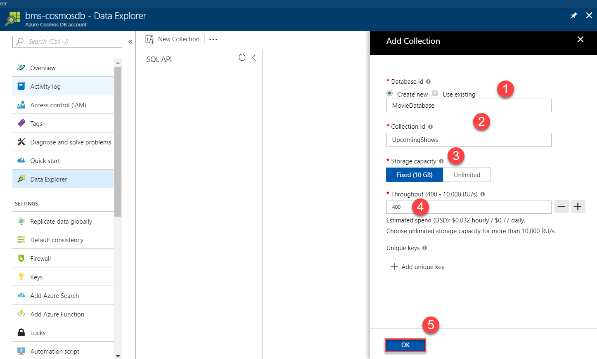
Step 1: After MovieDatabase has been deployed, click on New collection

Step 2: On Add Collection tab do the following
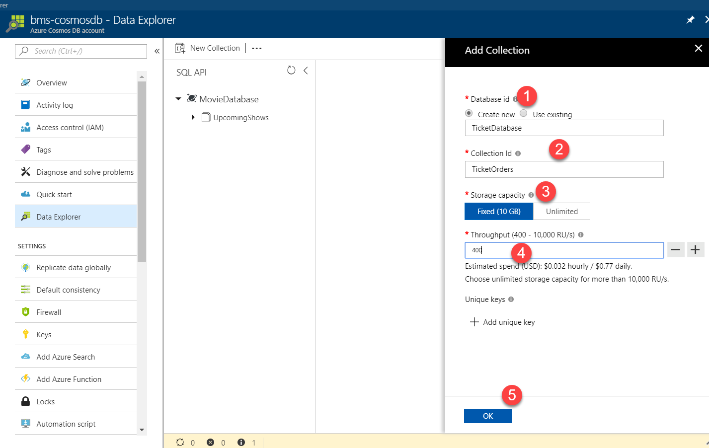
Step 1: Extract the zip folder provided at the workshop

Step 2: Open Visual Studio Code, click Open folder and select TicketEngine root folder

Step 3: Expand Azure Function section and click on Deploy to function icon
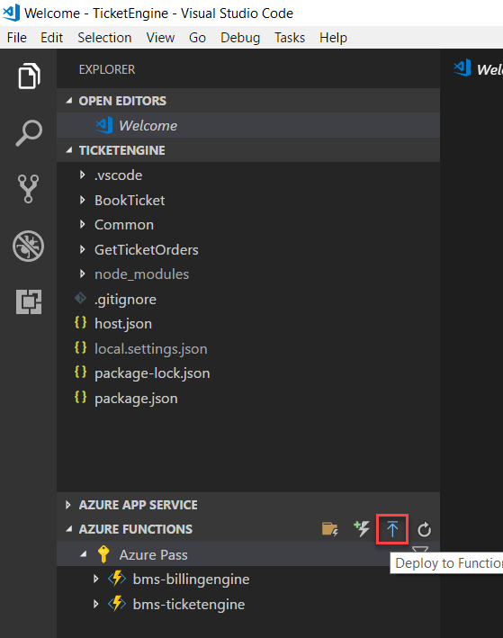
Step 4: On Select the folder to zip and deploy select current folder

Step 5: On Select a Subscription select your subscription
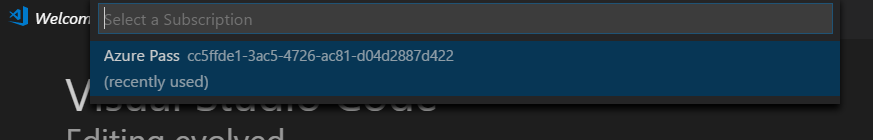
Step 6: On Select a Function App select your function application

Step 7: If the following menu pops up, click on Select Runtime and click beta (Preview)
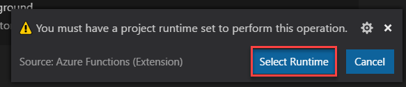

Step 8: Click on deploy

Step 8: After deployment is completed, you will see this screen which means your deployment is completed.
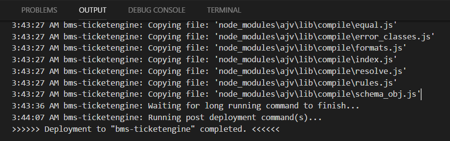
Repeat the same procedure for MovieEngine, BillingEngine
Step 1: Open Visual Studio Code, click Open folder and select BookMyShow root folder

Step 2: Open config.js and change URL of MovieEngine and TicketEngine to what you created in early exercise.

Step 3: Expand Azure App Service section and click on Deploy to web icon

Step 4: On Select the folder to zip and deploy select current folder
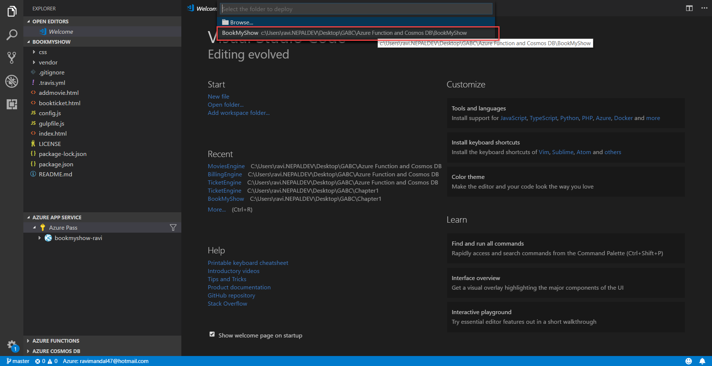
Step 5: On Select a Subscription select your subscription

Step 6: On Select a Web App select your web application
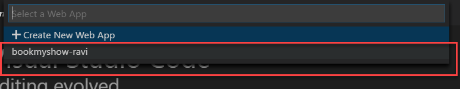
Step 7: Click on Deploy

emailAddress : email@rvimandal.com
emailPassword : Nep@l@123
CosmosDBHost : Host of CosmosDB account you created
CosmosDBAuthKey : Primary key of CosmosDB account
DatabaseId : MovieDatabase
CollectionId : UpcomingShows
CosmosDBHost : Host of CosmosDB account you created
CosmosDBAuthKey : Primary key of CosmosDB account
DatabaseId : TicketDatabase
CollectionId : TicketOrders
MovieEngineUrl : URL of Movies Engine Azure Function
BillingEngine : URL of Billing Engine Azure Function
EventGridTopicEndpoint : <empty>
EventGridTopicAuthKey : <empty>
EventTriggerType : HTTP